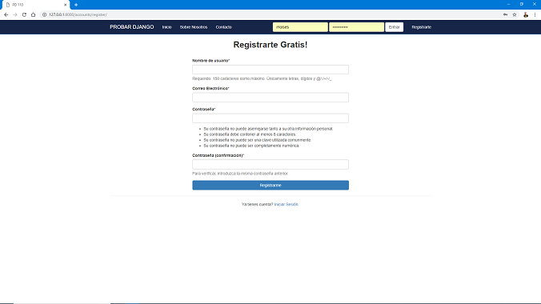
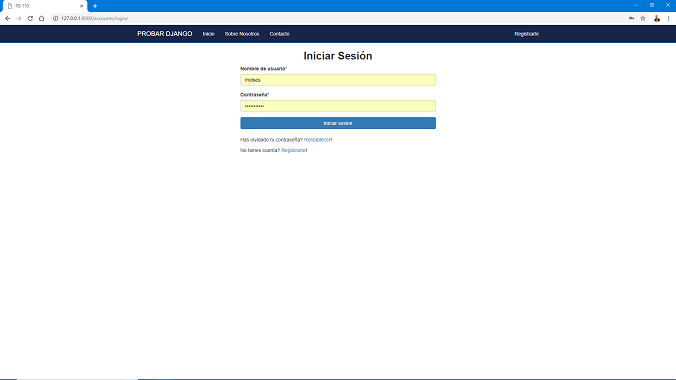
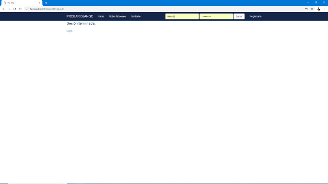
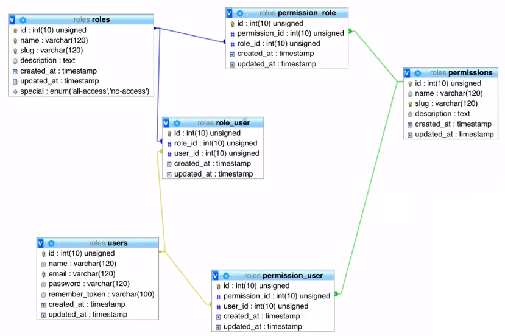

Django con Base de Datos
Reutilizando la práctica pasada de Django, vamos a utilizar nuestras vistas, controladores y modelos ya realizados.
Vamos a crear una conexión a una base de datos y vamos a agregar más validaciones para generar a cada uno de nuestros usuarios un rol con n permisos en él sistema.
Podemos registrar un usuario.

Iniciar sesión.

Y salir de la sesión.

Este es el diagrama de nuestra base de datos, la cual implementamos, creamos una lógica muy común en manejo de roles y permisos para los usuarios.
